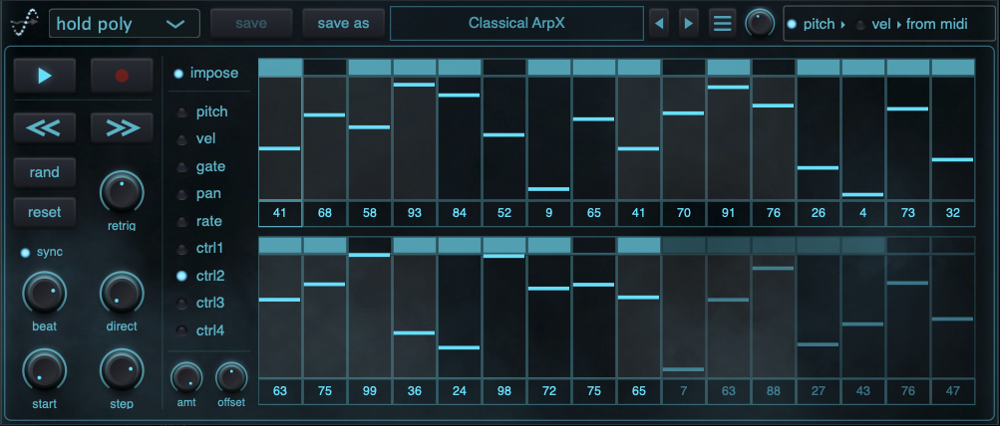

Welcome to Sequencer
Expressive 32-step MIDI sequencing for patterns that move.
WIN: VST3 | Max for Live
MAC: VST3 | Max for Live
Expressive 32-step MIDI sequencing for patterns that move.
WIN: VST3 | Max for Live
MAC: VST3 | Max for Live
Turn simple MIDI input into expressive, evolving performances with a focused 32-step sequencer built for fast musical experimentation. Shape every step with independent pitch, velocity, gate, pan, rate and four control lanes, then define exactly how the pattern moves using flexible playback, retrigger and timing modes.
Randomize, reset and shift pattern data in seconds, or refine each gesture with dedicated undo and redo. Host-synchronized and free timing options make Sequencer equally effective for tightly arranged productions, generative ideas and live performance. Available as a VST3 MIDI effect for macOS and Windows.

The included Max for Live device brings Sequencer into an Ableton Live MIDI chain while keeping the full editing experience in the plugin window. Place it before an instrument, open Sequencer from the device, and build patterns without leaving your Live set.
Four dedicated control mappings let CTRL 1–4 animate parameters in the next instrument or effect, turning each sequence into a complete performance. Map a lane with Ableton Live's familiar parameter workflow, then use amount and offset controls to define its movement while note, velocity, pitch-bend, modulation and other MIDI data continue through the chain.

If you have any questions, please email us at: dwp@dwp-plugin.com